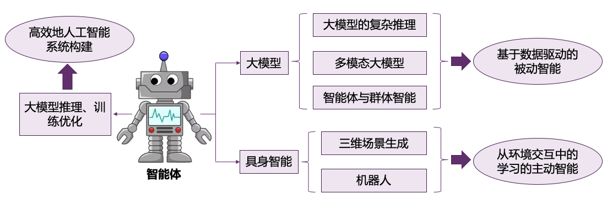

HamLab
研究小组简介
我即将成为清华大学计算机科学与技术系的博士后研究员，目前正在创建一个人工智能研究小组，暂命名为 HamLab ，本小组隶属于清华大学胡事民院士领导的 CSCG 实验室
为什么叫 “Ham” ？
“Ham”通常指的是美味的“汉堡”，在中文发音上也有“憨”的感觉，蕴含着 ”stay hungry, stay foolish” 的精神内涵；同时，希望研究小组的每个人都可以保持对人工智能、计算机视觉、计算机图形学研究中美味 “ham” 的追求
“Ham”也是我深度参与的第一个工作的名称，它象征着我在科研道路上的起点。我希望我们小组的每一位成员都能铭记自己最初投身科研的初心，以及在开始时对研究的那份热情
“Ham”是一个不同于传统命名方式，如 ‘Guolab’ 或 ‘Haolab’ 的名称。它打破了常规的命名框架，象征着实验室在研究方向上追求‘突破常规’的精神，体现了我们对创新与影响力的不断追求
研究方向
实验室的研究方向如下图所示，主要包含基础模型、具身智能和人工智能系统
Full-width PPT Image

长期招聘
长期招聘本科实习生 （线下和线上），参与实验室的科研和项目工作，如果你对我们的研究感兴趣，请通过邮件和我联系，并附带简历，优秀的实习生将有机会获得清华大学计算机系的保研推荐资格以及出国推荐等
主要招收对智能系统优化（对系统优化感兴趣，学过高性能计算相关课程或有相关经历）、大模型训练和评估（学习深度学习和大模型学习过相关的课程）、具身智能（学习机器人或者具身智能的内容）、三维生成（学习过三维生成和计算机图形学）,上述所有方向对编程有着较高的要求
博士生和硕士生的招收通常从表现优秀的本科实习生中遴选；目前（2025.3.20），2026 年入学的博士生名额已确定
目前，课题组已有多名来自清华大学计算机系、致理书院、新雅书院以及北京航空航天大学的本科生和研究生。我们欢迎来自不同学校和专业的同学联系。如果我认为我们非常契合，将在三天内回复您的邮件
|